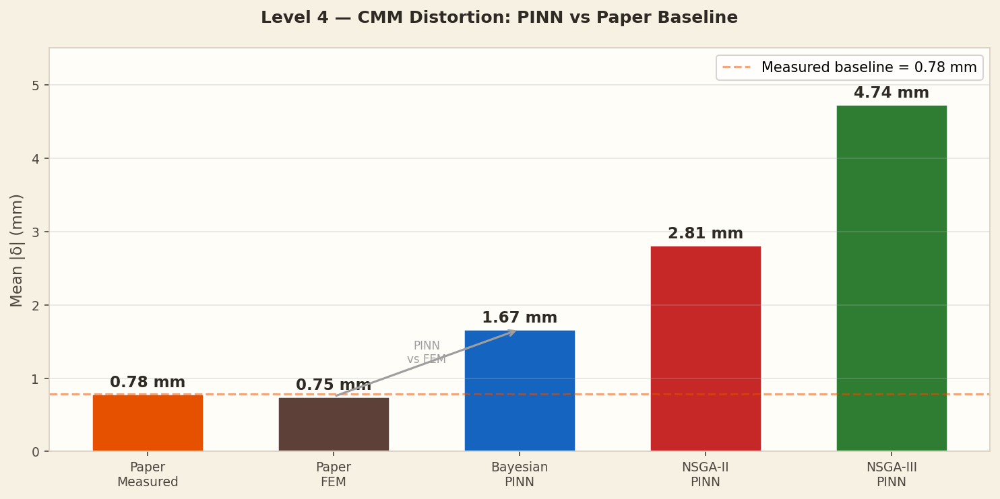

Distortion Analysis
The bar chart compares mean absolute distortion for all five cases: two physical/FEM references (paper measured and paper FEM) and three PINN-derived predictions. The paper measured value (0.78 mm) and paper FEM (0.75 mm) are very close — confirming the FEM model is well-validated against physical experiments. The three PINN predictions span a wide range (1.67–4.74 mm), all above the physical measurement, because they carry the systematic overestimation from their thermal prediction errors into the mechanical domain. The gap between Bayesian and NSGA-III is approximately a factor of 3 in distortion, matching the roughly 7× gap in thermal L2 error.

This grouped bar chart from the results directory provides a more detailed breakdown of distortion by zone (top surface, side walls, bottom) for all three PINN architectures versus the paper baseline. The paper FEM bars are near the measured baseline throughout, while the Bayesian PINN bars are systematically elevated but maintain the correct spatial pattern — highest distortion at the corners, lowest at the centre. NSGA-II and NSGA-III show distorted spatial patterns in addition to elevated magnitudes, indicating their thermal field errors break the correct spatial distribution.

The signed-error plot shows the distortion at each of the 47 CMM points as a signed quantity, allowing over- and under-prediction to be distinguished. Paper FEM (brown line) tracks the measured CMM values very closely across all 47 points. Bayesian PINN (blue) follows the correct trend but with a systematic positive bias (over-prediction). NSGA-II and NSGA-III show both large magnitude errors and occasional sign reversals — points where the predicted distortion is in the wrong direction — confirming that their thermal error is large enough to break the spatial coherence of the distortion field.